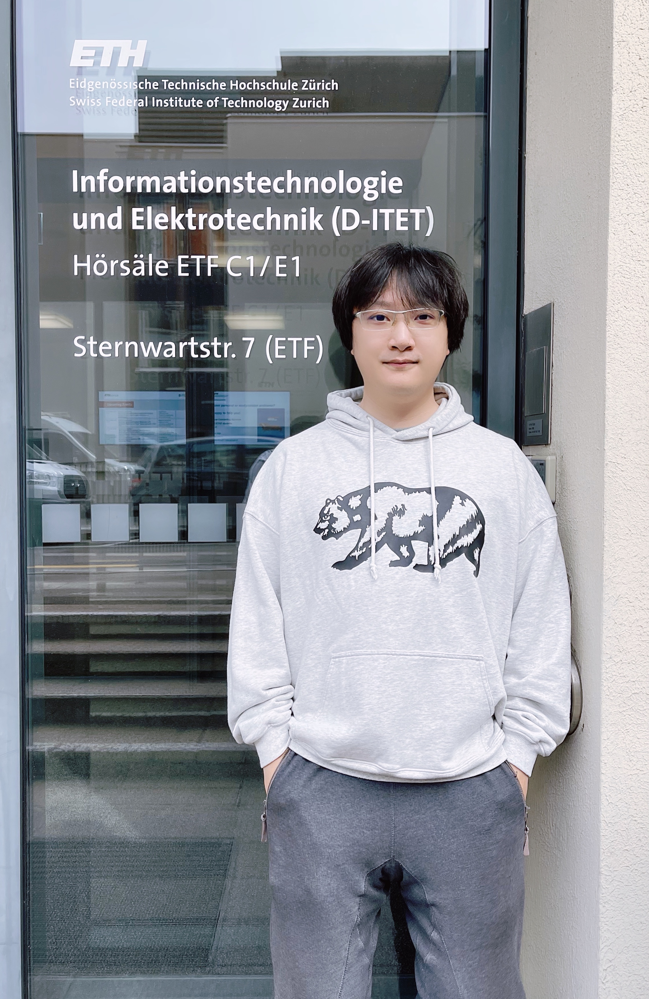

|
Zhu, Xiaoqiang (朱晓强)
|
 |
Lecturer, PhD
School of Software Engineering,
Beijing Jiaotong University,
Haidian District,
Beijing, China
E-mail: xqzhu@bjtu.edu.cn
|
About me
I received the Ph.D. degree in software engineering from Tianjin University, China, in 2022, and the B.S. degree in computer science from Dalian University of Technology, China, in 2018. I was the jointly doctoral student of ETH Zurich, Switzerland with CSC funding in 2021.
I am currently a Lecturer with the School of Software Engineering, Beijing Jiaotong University, China. My main research interests include Machine Learning, Deep Learning and Internet of Things. Also, I do some research about Computer Vision, such as encryption algorithms based on chaos theory. I focus on using AI to solve practical problems.
Education
Ph. D., Software Engineering, Tianjin University, China, 09.2018 - 12.2022
Wins the 1st place in the entrance examination
Member of Tianjin Key Laboratory of Advanced Networking, supervised by Prof. Tie Qiu and Prof. Wenyu Qu
Research Topic: Artificial Intelligence, Internet of Things, Indoor Localization
Jointly Doctoral Student, Computer Science, ETH Zurich, Switzerland, 04.2021 - 04.2022
The state-sponsored student with financial support by China Scholarship Council
Member of D-ITET Center for Integrated Systems Laboratory, supervised by Dr. Michele Magno and IEEE/ACM Fellow. Prof. Luca Benini
Project: "mmWave Sensors For Indoor Localization and Tracking"
M.E., Computer Science, Dalian University of Technology, China, 09.2016 - 07.2018
Postgraduate Recommendation, supervised by Prof. Xingyuan Wang (World's Top 2% Scientists)
Research Topic: Image Processing, Encryption Algorithm, Chaos Theory
Thesis Title: “Image Encryption Algorithm Based on Multiple Mixed Hash Functions”
Competitions and awards
National Funding Postdoctoral Researcher Program, China Postdoctoral Science Foundation, 2023
Youth Talent Cultivation Program, Beijing Jiaotong University, 2023
China Scholarship Council, Ministry of Education of the People’s Republic of China, 2021
Outstanding Volunteer, 2020 IEEE International Conference on Smart Internet of Things, 15.8.2020
Outstanding Volunteer, 2019 IEEE International Conference on Smart Internet of Things, 10.8.2019
2nd Award Postgraduate Scholarship, Tianjin University, 2019
Outstanding Postgraduate Student, Dalian University of Technology, 2018
1st Award Postgraduate Scholarship, Dalian University of Technology, 2017
Outstanding Postgraduate Student, Education fund item of Liaoning province, 2016
National Inspirational Scholarship, Ministry of Education of the People’s Republic of China, 2015
Research
My research interests include:
Current work
Under review
[2区] X. Zhu, W. Qu, T. Qiu, et al. "Dynamic Radio Map Construction with Minimal Manual Intervention: A State Space Model-Based Approach with Imitation Learning". IEEE TBD, 2023.
[2区] X. Zhu, J. Liu, D. Zhang, et al. "Enhancing Patient Privacy in IoT-Enabled Intelligent Medical Systems: A Deep and Broad Learning-Based Efficient Encryption Network", IEEE MultiMedia, 2023.
[1区, IF: 35.6] X. Zhu, J. Liu, L. Lu, et al. "Enabling Intelligent Connectivity: A Survey of Secure ISAC in 6G Networks", IEEE COMST, 2023, Major Revision.
Recent publications
[CCF A] X. Zhu, T. Qiu, W. Qu, et al. "BLS-Location: A Wireless Fingerprint Localization Algorithm Based on Broad Learning", IEEE TMC, 2023. 22(1): 115-128.
[2区] X. Zhu, W. Qu, X. Zhou, et al. "Intelligent Fingerprint-based Localization Scheme using CSI Images for Internet of Things". IEEE TNSE, 2022, 9(4), 2378-2391.
[CCF A] X. Zhu, T. Qiu, W. Qu, et al. "Path Planning for Adaptive CSI Map Construction with A3C in Dynamic Environments", IEEE TMC, 2021. doi: 10.1109/TMC.2021.3131318.
[1区, IF: 35.6] X. Zhu, W. Qu, T. Qiu, et al. "Indoor intelligent fingerprint‑based localization: Principles, approaches and challenges", IEEE COMST, 2020, 22(4): 2634‑2657.
[2区] X. Wang, Y. Wang, X. Zhu, et al. "A novel chaotic algorithm for image encryption utilizing one-time pad based on pixel level and DNA level", Opt Lasers Eng, 2020, 125: 105851.
[2区] X. Wang, Y. Wang, X. Zhu, et al. "Image encryption scheme based on Chaos and DNA plane operations", Multimed Tools Appl, 2019, 78(18): 26111‑26128.
[2区] X. Wang, X. Zhu, X. Wu, et al. "Image encryption algorithm based on multiple mixed hash functions and cyclic shift", Opt Lasers Eng, 2018, 107: 370‑379.
[2区] X. Wang, X. Zhu, Y. Zhang, et al. "An image encryption algorithm based on Josephus traversing and mixed chaotic map", IEEE Access, 2018, 6: 23733‑23746.
[CCF A] 王春鹏, 王兴元, 张川, 朱晓强, 夏之秋. "基于三元数极谐-Fourier矩和混沌映射的立体图像零水印算法",中国科学：信息科学, 2018, 1: 79‑99.
Full list of publications in Google Scholar.
Grant patents
X. Zhu, J. Liu, L. Lu. "A Path Planning Method for Constructing CSI Fingerprint Map Based on Reinforcement Learning", No. 202310874838.2, 2023.
X. Zhu, J. Liu, D. Zhang. "An Intelligent Adaptive CSI Fingerprint Map Update Method Based on Imitation Learning", No. 202310775481.2, 2023.
T. Qiu, X. Zhu, W. Qu. "An Incremental Intelligent Indoor Location Method Based on CSI Image", No. CN113691940A, 2022.09.27.
T. Qiu, X. Zhu, W. Qu. "An Efficient Indoor Fingerprint Location Method Based on Broad Learning", No. CN111929641A, 2022.08.09.
T. Qiu, H. Huang, X. Zhou, C. Zhang, X. Zhu. "Heart Rate Monitoring and Respiratory Event Detection Method Based on Channel State Information", No. 202210661544.
T. Qiu, C. Wu, L. Zhao, K. Li, X. Zhu. "A Fast And High-precision Indoor Fingerprint Location Method based on Ensemble Broad Learning", No. 202110866814.
Academic service
Reviewer
IEEE Transactions on Mobile Computing
IEEE/ACM Transactions on Networking
IEEE Transactions on Wireless Communications
IEEE Internet of Things Journal
IEEE Transactions on Communications
IEEE Transactions on Network Science and Engineering
IEEE MultiMedia
IEEE Access
Information Sciences
Nonlinear Dynamic
IET Signal Processing
Optics and Lasers in Engineering
IEEE SmartIoT’ 2019‑2022, IEEE CSCWD’ 2020‑2021, IEEE IWQoS’ 2020
PC Member and Session Chair
Responsibility for the track “Smart Sensor Networks and Internet of Things” of 2020 IEEE CSCWD.
Responsibility for the special session “Artificial Intelligence, Machine learning and Evolutionary Computing” of 2019 IEEE SmartIoT.
Supervising and Mentoring Activities
Lecture Course
Data Structure, M310002B.
Professional Course Comprehensive Practical Training I, P210001B.
Introduction to Internet of Things.
Huawei Project "HUAWEI Ascend: Atlas Intelligent Edge Platform", 08.2021 - 08.2022
The Huawei Atlas artificial intelligence computing solution uses modules, boards, small stations, servers, clusters and other rich product forms to create a full-scenario AI for "end, edge, and cloud" infrastructure solution, covering the whole process of reasoning and training in the field of deep learning.
Master Thesis, 09.2017 - 09.2021
Chen Wu, B.Sc., College of Intelligence and Computing, Tianjin University, Project: “Research on Indoor Fingerprint Location Method Based on Data Fusion and Broad Learning”.
Ziyu Xie, B.Sc., College of Intelligence and Computing, Tianjin University, Project: “Research on Indoor Intelligent Localization Based on Broad Learning System Utilizing Ensemble Strategy”.
Yu Wang, B.Sc., Department of Electronic Information and Electrical Engineering, Dalian University of Technology, Project: “Research on Chaotic Image Encryption Based on One‑time Pad and Region Partition”.
Junjian Zhang, B.Sc., Department of Electronic Information and Electrical Engineering, Dalian University of Technology, Project: “Two Image Encryption Algorithms Based on F‑Y Scrambling and Z‑Z Scrambling”.
Teaching Assistant, 09.2017 - 06.2018
Dalian University of Technology, Undergraduate Teaching, Spring Semester 2018: Design and Practice of Analog Circuit.
Dalian University of Technology, Undergraduate Teaching, Fall Semester 2017: Digital Logic Circuit.
College Students "Innovative Entrepreneurial Training Plan Program", 05.2017 - 08.2018
Yating Wu, Department of Electronic Information and Electrical Engineering, Dalian University of Technology, Project: “Image Encryption Algorithm Based on Multiple Hash and Random Cyclic Shift”.
Bin Yi, Department of Electronic Information and Electrical Engineering, Dalian University of Technology, Project: “Design of symmetric cryptography system based on new space‑time chaos”.
|